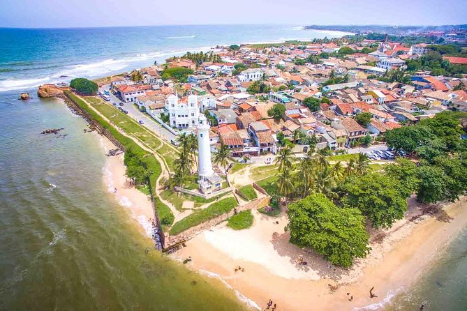

Galle Dutch Fort
Galle Fort which situated in bay of Galle, was built first in 1588 by the Portuguese. The value of this archaeological monument has been recognized by the UNESCO and site has been named as a cultural heritage.
Distance from Colombo : (calculating)
Tansport : Bus , Train , Private Vehicle